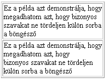

A táblázat
megadása a <table> tag használatával
lehetséges.
A <table> és </table> tageken belül, a
<tr> elemekkel adhatjuk meg a táblázat sorait.
A <td> elemek a sorokon belüli cellák
létrehozására szolgál.
A <table> tag
paraméterei a következõk lehetnek:
width: szélesség
megadása képpontokban vagy a rendelkezésre álló hely százalékában align: a táblázat igazításának típusa (balra - left, középre
- center, jobbra - right) border: a
keret vastagsága képpontokban cellspacing: (cellatávolság): az egyes cellák közti hely képpontokban cellpadding: (cellabélés): a cella tartalma és a cella széle
közti távolság képpontokban
A <tr> tag
paraméterei a következõk lehetnek:
align: a
sorban lévõ cellák vízszintes igazításának típusa (balra -
left, középre - center, jobbra - right) valign:a sorban lévõ cellák függõleges igazításának típusa
(felülre - top, középre - middle, alulra - bottom)
A <td> tag
paraméterei a következõk lehetnek:
align: a cella
vízszintes igazításának típusa (balra - left, középre -
center, jobbra - right) valign:a cella függõleges igazításának típusa (felülre
- top, középre - middle, alulra - bottom) (a fenti igazítások felülírják a <tr> tagnél megadott
igazításokat)
width: cella szélességének megadása képpontokban. (A százalékos
megadás nem javasolt...) height: cella magasságának megadása képpontokban. (A százalékos
megadás nem javasolt...) rowspan: az adott cella ennyi sor magas lesz. (cellák
egybenyitása függõlegesen)
colspan: az adott cella ennyi oszlop széles lesz (cellák
egybenyitása vízszintesen)
A következõ példákon
keresztül megnézhetitek, hogy az egyes paraméterek valójában mire
szolgálnak.
Ha ezt a kódot használod
ez lesz az eredménye
<table align="center">
<tr>
<td>1. sor 1. elem</td>
<td>1. sor 2. elem</td>
<td>1. sor 3. elem</td>
</tr>
<tr>
<td>2. sor 1. elem</td>
<td>2. sor 2. elem</td>
<td>2. sor 3. elem</td>
</tr>
</table>
Border: a táblázat köré rajzolandó keret
vastagsága pixelekben Cellpadding: a cellán belül a cellatartalom
és a cella széle közti távolság pixelekben
<table border=1 cellpadding=5>
<tr>
<td>1. sor 1. elem</td>
<td>1. sor 2. elem</td>
<td>1. sor 3. elem</td>
</tr>
<tr>
<td>2. sor 1. elem</td>
<td>2. sor 2. elem</td>
<td>2. sor 3. elem</td>
</tr>
</table>
1. sor 1. elem
1. sor 2. elem
1. sor 3. elem
2. sor 1. elem
2. sor 2. elem
2. sor 3. elem
A kódot módosíthatod az alábbi ablakban:
Ha valamelyik cella üres, akkor a böngészõ nem
jeleníti meg a cellát határoló keretet. Ha azt
akarjátok, hogy legyen egy üres cellátok, amely
körül van keret, akkor a <td> és </td>
tagek közé helyezzetek el egy kódot.
Táblázat cellabéléssel, és cellatávolsággal
(cellspacing)
Cellspacing: az egyes cellák közti
távolság illetve a szélsõ cellák és a keret közti
távolság pixelekben
<table border=1 cellpadding=5 cellspacing=10>
<tr>
<td>1. sor 1. elem</td>
<td>1. sor 2. elem</td>
<td>1. sor 3. elem</td>
</tr>
<tr>
<td>2. sor 1. elem</td>
<td>2. sor 2. elem</td>
<td>2. sor 3. elem</td>
</tr>
</table>
1. sor 1. elem
1. sor 2. elem
1. sor 3. elem
2. sor 1. elem
2. sor 2. elem
2. sor 3. elem
A kódot módosíthatod az alábbi ablakban:
Táblázat felirattal (caption)
A táblázat nevét a <caption>
</caption> tagek között adhatjuk meg.
Az hogy a név a táblázat fölött, vagy alatt jelenik meg, az
align=top,
illetve align=bottom paraméterrel adhatjuk meg.
A valign=top|middle|bottom paraméter
használatával a cella tartalmát felülre, középre vagy
alulra igazíthatjuk.
Alapértelmezésben a cellatartalom középre igazodik.
A middle helyett írhatunk center-t is.
<table border=1>
<tr>
<td>Az INFO ’9? konferencia rendezõi ez évtõl
Szombathelyen is elindítják az informatika oktatással
és érvényesülési ismeretekkel foglakozó konferencia
sorozatot.</td>
<td valign=top>felül</td>
<td valign=bottom>alul</td>
<td valign=middle>középre</td>
</tr>
</table>
Az INFO ’9? konferencia rendezõi ez
évtõl Szombathelyen is elindítják az
informatika oktatással és érvényesülési
ismeretekkel foglakozó konferencia sorozatot.
A százalékos megadás során a
táblázat szélessége mindig a rendelkezésre álló hely
megadott százaléka lesz.
Tehát ha az ablak méretét megváltoztatjuk, akkor a táblázat
mérete is megváltozik.
Ha valamelyik cella üres, akkor a böngészõ nem
jeleníti meg a cellát határoló keretet, illetve a
megadott háttérszín sem érvényesül. Ha azt
akarjátok, hogy legyen egy üres cellátok, amely
körül van keret, vagy legyen egy adott hátterû üres
cellátok, akkor a <td> és </td> tagek
közé helyezzetek el egy kódot.
Táblázathoz háttérkép rendelése
(background)
Ha nem háttérszínt, hanem
háttérképet szeretnénk definiálni, akkor azt a background
paraméterrel tehetjük meg.
A kép formátuma GIF vagy JPG lehet.
Az egyes cellák méretének megadása (szélesség,
magaság)
A cellák szélességét szintén
beállíthatjuk a width= paraméter használatával.
Használhatjuk a relatív (%-ban megadott), vagy az abszolút
(képpontokban megadott) méretmegadási formát is, bár a százalékos megadást
nem támogatja a HTML specifikáció. A böngészõk többsége azonban helyesen
jeleníti meg az oldalt.
A táblázat, illetve a cella
magasságát definiálhatjuk a height= paraméterrel.
(A táblázat magasságát megadhatjuk %-os formában is, de a cellamagasság
%-os megadását kerüljük, mert a különbözõ típusú böngészõk más-más
eredményt mutatnak)
Alapesetben ha két szó között üres hely van,
akkor a böngészõ a jobb helykihasználás érdekében
a két szót különválaszthatja, tehát elképzelhetõ,
hogy a két szó nem egy sorban jelenik meg. Ha ezt el
szeretnénk kerülni, akkor kell az
(non-breaking space) jelet alkalmaznunk. Ekkor a
böngészõ a két szót "egymáshoz
ragasztja", vagyis nem fogja szétválasztani a
szavakat.
Példa:
Vegyünk egy (205 képpont széles) táblázatot és nézzük
meg, hogy hogyan tördeli a böngészõ a szöveget.

ez az alap tördelés
Itt a "bizonyos szavakat"
között nem egyszerû üres hely van, hanem
kód, ezért a böngészõ nem tördeli külön a
szavakat.
Amint a fentiekben látható volt, az
karaktert a táblázatoknál is nagy hasznát vehetjük.